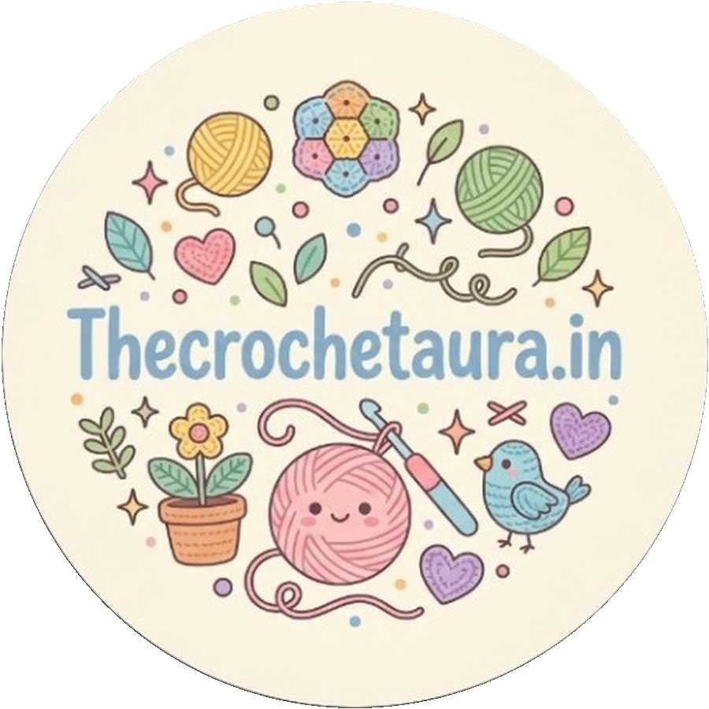

✿✿✿
Forever blooms
Crochet flowers & bouquets made to last beyond the moment.
Enquire about flowers ↗
the crochet auraHANDMADE WITH LOVEA LITTLE MORE PERSONAL
Thoughtful crochet pieces, colourful flowers and keepsakes — lovingly made to make ordinary moments feel a little more special.
Not just a gift. A little piece of someone's time, care & creativity.
✿THE THINGS WE MAKE
Every stitch tells a story. Explore the kinds of handmade treasures you can enquire about.
Crochet flowers & bouquets made to last beyond the moment.
Enquire about flowers ↗Personal, handmade surprises for the people who matter.
Plan a special gift ↗Have something in mind? Let's make a one-of-a-kind piece.
Start a custom order ↗Illustrative artwork shown for this website preview. Product photography and exact catalogue can be added by the brand.
Some things are made with hands.
The best ones are made with heart.
A NOTE FROM OUR CORNER
The Crochet Aura is an artist-led crochet and embroidery page based in Amritsar. From bouquets and flowers to thoughtful gifts, the idea is simple: make something by hand that feels personal.
Each creation begins with a little imagination, a lot of patience and the love of making something special.
Say hello →HAVE A LITTLE IDEA?
Tell us what you're imagining — a bouquet, a gift or a custom crochet creation. We'd love to hear about it.
DM us on Instagram ↗✿LET'S CONNECT
For orders, bulk enquiries or a custom idea, reach out through Instagram. We'll take it from there.